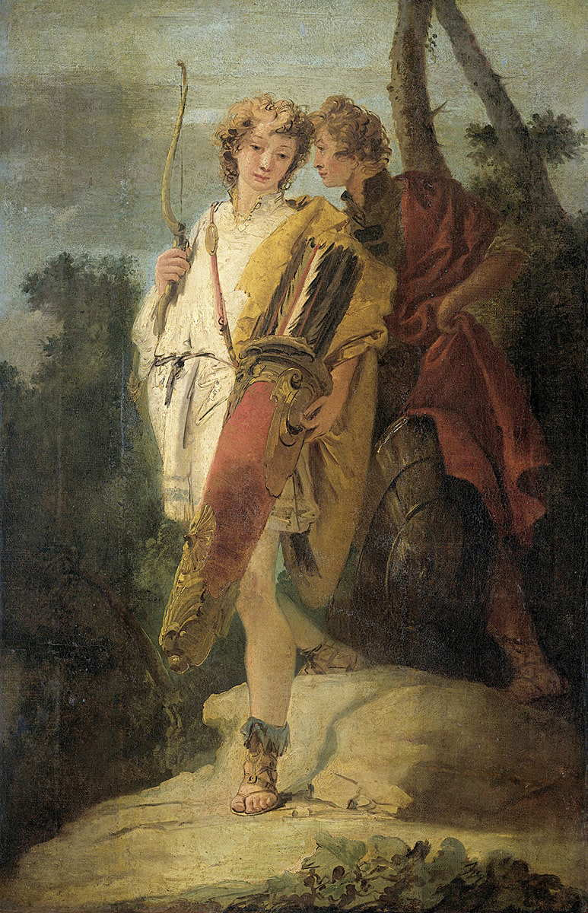
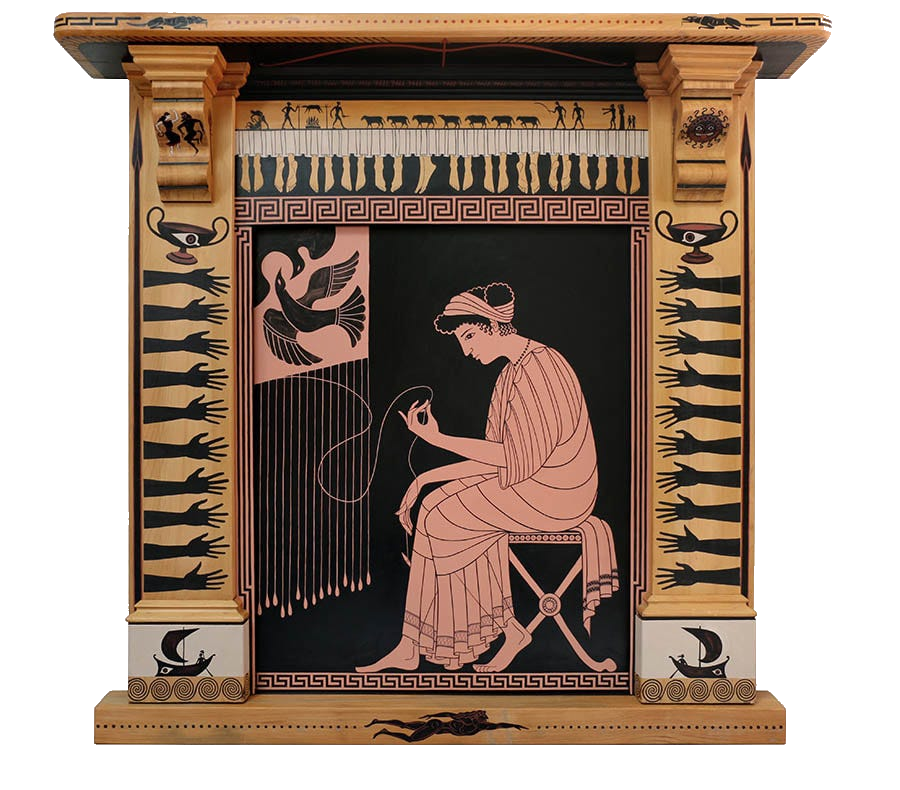
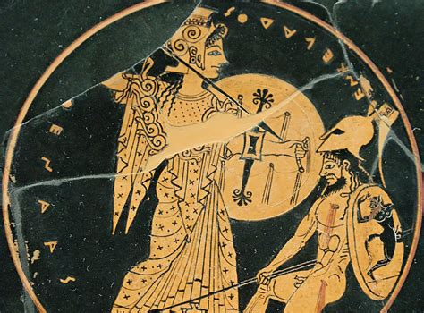
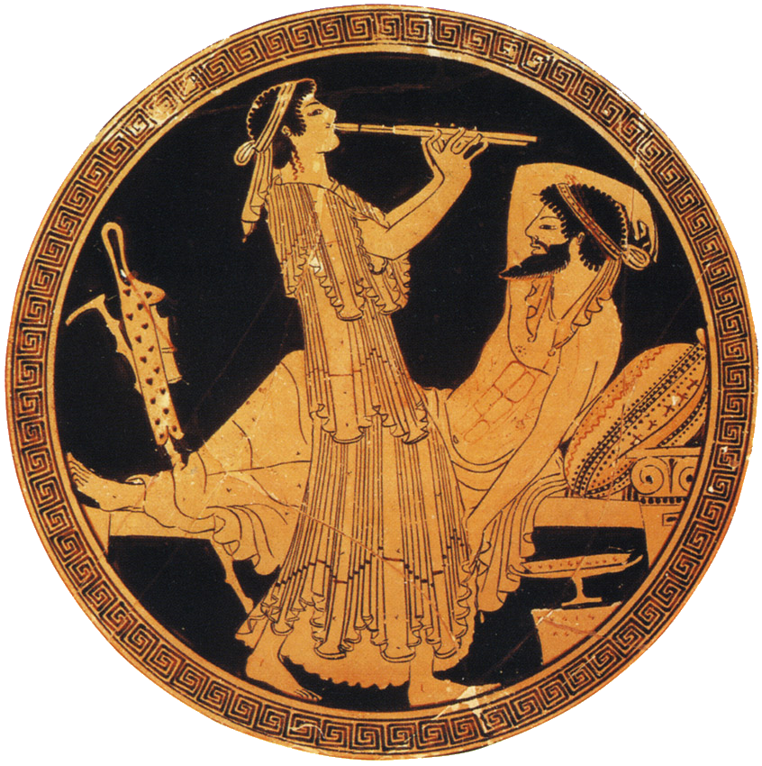
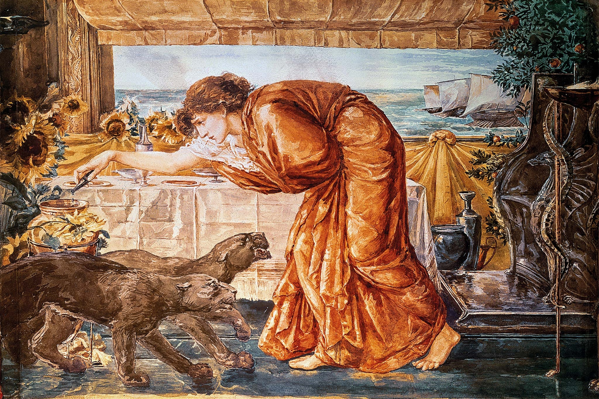
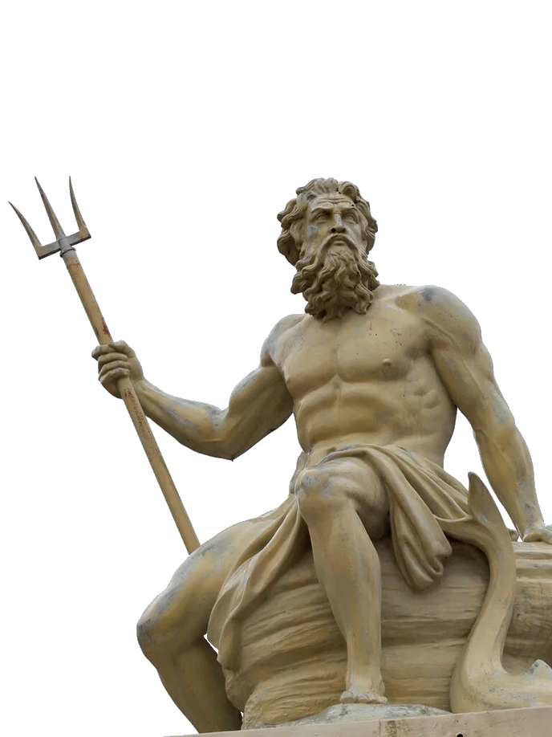

Odiseea lui Homer
Introducere
Homer (secolul al IX-lea î.Hr. - secolul al VIII-lea î.Hr.) a fost un poet și rapsod grec legendar, căruia i se atribuie scrierea Iliadei și Odiseei. În antichitate, i-a fost atribuit uneori întregul Ciclu Epic, care includea și alte poeme despre Războiul troian, precum și poeme tebane despre Oedipus și fiii săi.
Odiseea este o epopee greacă atribuită lui Homer, care povestește aventurile lui Odiseu în drumul său spre casă după războiul troian.
Cartea este împărțită în 24 de cânturi și include teme precum curajul, loialitatea și puterea destinului.
Telemachus (cânturile I-IV)
Zeii Olimpului, persuadați de înțeleapta Atena, hotărăsc că a venit vremea ca Odiseu să se întoarcă, în sfârșit, acasă, în Itaca. Eroul este reținut de șapte ani de către nimfa Calypso. Fiul său, Telemachus, îi duce teribil dorul și se decide să ceară informații despre el călătorind în Pylos și Sparta. Este batjocorit de Antinou și gloata de pețiori, care așteaptă să primească mâna soției lui Odiseu, Penelope. Tânărul este ajutat de Atena în drumeția sa, fiind primit la Pylos de către Nestor, luptat în Războiul troian. Bătrânul îl încurajează pe băiat să meargă și în Sparta, la Menelau, care sosise ultimul de pe căile mării.
Telemachus pornește a doua zi în deplasare, într-un car de luptă, fiind însoțit de fiul lui Nestor, Pisistrate. La Sparta, Telemachus îi găsește pe Menelau și Elena, acum împăcați. Cei doi povestesc cum s-au întors în Sparta, după o lungă călătorie prin Egipt. Acolo, pe insula Pharos, Menelaus îl întâlnește pe bătrânul zeu marin Proteus, care îi spune că Odiseu a fost captiv al nimfei Calypso. Telemachus mai află și soarta fratelui lui Menelau, Agamemnon, rege al Micenei și conducător al grecilor la Troia. Fusese ucis la întoarcerea acasă de soția sa, Clitemnestra, și de iubitul ei, Egist.
Povestea se mută pentru scurt timp la pețitori, care abia și-au dat seama că Telemachus a plecat. Supărați, ei pun la cale un plan pentru a-i prinde în ambuscadă corabia și a-l ucide în timp ce navighează înapoi acasă. Penelope le aude complotul și își face griji pentru siguranța fiului ei.
Către Cetatea Feacilor (cânturile V-VIII)
În decursul anilor în care Odiseu a fost captivul lui Calypso pe insula Ogygia, aceasta s-a îndrăgostit profund de el, chiar dacă el îi respinge ofertele de nemurire ca soț al ei, și își plânge încă dorul de casă. Zeul mesager Hermes, trimis de Zeus ca răspuns la rugămintea Atenei, îi ordonă să îl elibereze. Odiseu construiește o plută și străbate marea, ajungând aproape de Țara Feacilor. Poseidon trimite o ultimă furtună, distrugând pluta, dar, ajutat de un voal dat de nimfa mării, Ino (Leucothea), Odiseu înoată până la țărm. Gol și epuizat, se ascunde într-o grămadă de frunze și adoarme.
A doua zi dimineață, trezit de râsete de fete, eroul o vede la spălat de rufe pe tânăra Nausicaa, fiica conducătorilor feaci. Apelând la ajutor, fata îl încurajează să ceară ospitalitatea părinților ei, Arete și Alcinou. La curtea regală, Alcinou îi promite că îi va pune la dispoziție o corabie pentru a-l întoarce acasă. El rămâne pentru câteva zile. Odiseu îl roagă pe cântărețul orb Demodocos să-i spună povestea Calului Troian, o stratagemă în care el jucase un rol principal. Incapabil să-și ascundă emoția în timp ce retrăiește acest episod, Odiseu plânge și își dezvăluie, în sfârșit, identitatea. Apoi, povestește întoarcerea sa din Troia.
Povestirile lui Odiseu (cânturile IX-XII)
Peripețiile lui Odiseu încep după ce părăsește, cu 12 corăbii, ruinele orașului Troia, jefuindu-i pe tracii ciconi, aliații Troiei, de care vor fi ulterior alungați. Ajunși pe insula Lotofagilor, unii din însoțitorii lui mănâncă din fructele lor, uitându-și patria, Itaca. Cei rămași ajung, împreună cu Odiseu, pe insula ciclopilor, uriașii cu un singur ochi. Echipajul intră în peștera ciclopului Polifem, fiul lui Poseidon. Acesta devorează câțiva soldați greci, înspăimântându-l chiar și pe Odiseu. Eroul născocește calea de a-l îmbăta pe monstru cu vin, și apoi îl orbește cu un țăruș. Odiseu și oamenii săi reușesc, în cele din urmă, să scape din peșteră, ascunzându-se sub burta oilor, lăsate de ciclop să iasă la păscut. Rănirea ciclopului atrage însă un blestem asupra lui Odiseu, înfrânat de Posedion din a mai ajunge acasă.
După ce ancorează pe insula acestuia, Odiseu primește în dar de la Aiolos (Eol), regele vântului, un sac cu vânturi. Ajunși aproape de casă, însoțitorii săi, curioși și lacomi, deschid sacul, pornind o furtună care-i mână din nou departe de casă. Astfel, ajung pe insula Aiaia, a vrăjitoarei Circe, care îi preschimbă pe însoțitorii lui Odiseu în porci și îi reține prin farmecele sale. Odiseu este protejat de acestea prin intervenția lui Hermes. Grecii petrec apoi cu vrăjitoarea timp de un an, până când aceasta îl sfătuiește pe erou să meargă în Țara Morților, pentru a cere sfatul prorocului Tiresias. Corabia lui Odiseu străbate, așadar, marea, până la hotarele lumii, la Cimmerienii de lângă Ocean. Aici, eroul aduce jertfele pomenite de Circe și invocă duhurile celor morți. Odiseu își întâlnește astfel mama, dar și pe Ahile, Agamemnon, Patroclu, Heracle și Tiresias. După ceremonial, aheii pornesc iar pe ape și se întorc la Circe.
Drumul spre Itaca mai este îngreunat și de sirene, ale căror glasuri fermecate duc corăbierii la pieire, ademenindu-i să își zdrobească corăbiile de stânci. Curios să afle cum sună cântecul lor, Odiseu le cere marinarilor săi să își astupe urechile cu ceară, iar pe el să îl lege de catarg, precizând că nu trebuie să fie dezlegat cu niciun preț. Astfel reușește să asculte cântecul sirenelor, evitând însă pericolul scufundării. Împreună cu echipajul său, Odiseu izbutește să traverseze cu bine și strâmtoarea dintre cei doi monștri, Scila și Caribda. Înfometați, ajung apoi pe insula lui Helios, zeul soarelui, unde însoțitorii lui Odiseu fură din vitele sacre ale zeului, pentru a își potoli foamea. Drept pedeapsă pentru acest sacrilegiu, aceștia mor ulterior într-o furtună, din care numai Odiseu, care nu mâncase, reușește să scape. El ajunge pe insula nimfei Calypso.
Întoarcerea la Itaca (cânturile XIII-XX)
După ce îi ascultă povestea, feacii, profund impresionați, sunt de acord să-i ofere lui Odiseu o comoară mai mare decât ar fi primit din prada Troiei. Ei îl transportă noaptea, în timp ce el doarme adânc, într-un port ascuns din Itaca. Odiseu se trezește și crede că a fost aruncat pe un tărâm îndepărtat, înainte ca Atena să apară și să-i dezvăluie că se află, într-adevăr, în Itaca. Ea îi ascunde comoara într-o peșteră din apropiere și îl deghizează într-un cerșetor bătrân, pentru ca el să vadă cum stau lucrurile în cetate. Ajunge la coliba unuia dintre sclavii săi, Eumaios, un crescător de porci, care îl tratează cu ospitalitate și vorbește favorabil despre Odiseu.
Telemachus navighează spre casă din Sparta, evitând ambuscada întinsă de pețitori. El debarcă pe coasta Itacăi și îl întâlnește pe Odiseu. Odiseu i se dezvăluie lui Telemachus (dar nu și lui Eumaios), iar cei doi decid că pețitorii trebuie să fie uciși. Telemachus pleacă primul acasă. Însoțit de Eumaios, Odiseu se întoarce la casa sa, pretinzând în continuare că este cerșetor. Este ridiculizat de pețitorii din propria casă, în special de Antinou.
Identitatea lui Odiseu este descoperită și de slujnica Eurycleia, când aceasta îi recunoaște o cicatrice veche, în timp ce îi spală picioarele. Eurycleia încearcă să-i spună Penelopei adevărul, dar Atena se asigură că Penelope nu o poate auzi. Odiseu îi cere Eurycleiei să jure că va păstra secretul.
Uciderea pețitorilor (cânturile XXI-XXIV)
A doua zi, la îndemnul Atenei, Penelope îi convinge pe pretendenți să concureze pentru mâna ei printr-un concurs de tir cu arcul, folosind arcul lui Odiseu. Va câștiga cel care va reuși să întindă arcul și să tragă o săgeată printre o duzină de capete de topor. Odiseu ia parte la competiție și este singurul suficient de puternic pentru a întinde arcul și a trage săgeata printre cele douăsprezece topoare, ceea ce îl face câștigător. Apoi își aruncă zdrențele și îl ucide pe Antinou cu următoarea săgeată. Odiseu și Telemachus îi ucid pe ceilalți pretendenți, mai întâi folosind restul săgeților și apoi cu săbiile și sulițele.
După ce bătălia este câștigată, Telemachus spânzură și douăsprezece dintre servitoarele lor din casă, pe care Eurycleia le identifică ca fiind vinovate de trădarea Penelopei. Odiseu se arată Penelopei. Ea este ezitantă, dar îl recunoaște atunci când acesta descrie cum și-a făcut patul dintr-un măslin încă înrădăcinat în pământ, detaliu pe care nimeni altcineva n-ar fi putut să-l știe.
Odiseu urmează să-și revadă tatăl, Laerte, cu care stă de vorbă la casa lui de la țară. Bărbații cetății, înfuriați de moartea fiilor lor, pețitorii, se răscoală împotriva lui Odiseu. Acesta îi înfruntă vitejește până când Atena, sub chipul prietenului lui Odiseu, Mentor, face pace între toți cei implicați.
Personaje
OdiseuProtagonistul Odiseei , Odiseu , este regele Itacai și un erou al războiului troian. A lipsit din casa lui în ultimii 20 de ani: primii zece petrecuți în război, iar al doilea zece petrecuți pe mare în timpul încercării sale de a se întoarce acasă. Cu toate acestea, Odiseu se confruntă cu nenumărate obstacole de-a lungul călătoriei sale care îi întârzie călătoria la Itaca.
În epopeele homerice, numele personajelor sunt asociate cu un epitet care le descrie personalitatea. Epitetul lui Odiseu, care apare de peste 80 de ori în poem, este „cu multă viclenie.” Numele lui Odiseu este asociat etimologic cu conceptul de „necaz” și „supărare”. Viclean și isteț, Odiseu folosește trucuri inteligente pentru a scăpa din situații dificile, cel mai memorabil când scăpa de peștera lui Polifem spunând că numele lui este „nimeni” sau „nimeni”. Este un erou anti-eroic, în special când este considerat în contrast cu Ahile, eroul clasic al Iliadei lui Homer .
TelemachusFiul lui Odiseu și Penelope, Telemachus este în pragul bărbăției. Știe foarte puține despre tatăl său, care a plecat la Troia când Telemachus era copil. La sfatul Atenei, Telemachus pleacă într-o călătorie pentru a afla mai multe despre tatăl său, cu care se reîntâlnește în cele din urmă. Împreună, Telemachus și Odiseu complotează cu succes căderea pretendenților care o curtează pe Penelope și caută tronul lui Itaca.

PenelopePenelope, soția lui Odiseu, este vicleană și loială. Ea a așteptat revenirea soțului ei în ultimii 20 de ani, timp în care a conceput diverse strategii pentru a amâna căsătoria cu unul dintre numeroșii ei pretendenți. Într-un astfel de truc, Penelope pretinde că țese un giulgiu pentru tatăl în vârstă al lui Odiseu, afirmând că va alege un pretendent când giulgiul va fi terminat. În fiecare noapte, Penelope desface o parte din giulgi, astfel încât procesul nu se termină niciodată.

Penelope se roagă la Athena, zeița vicleniei și a meșteșugurilor. La fel ca Atena, Penelope este o țesătoare. Afinitatea Penelopei pentru Atena servește la întărirea faptului că Penelope este unul dintre cele mai înțelepte personaje ale poemului.
AtenaAtena este zeița vicleanului, a războiului inteligent și a meșteșugurilor precum tâmplăria și țesutul. Ea ajută familia lui Odiseu pe tot parcursul poemului, de obicei deghându-se sau deghizând identitățile altor personaje. Penelope are o afinitate deosebită cu Athena, deoarece Penelope este o țesătoare, o formă de artă pe care Athena stăpânește.

PețitoriiPețitorii este un grup format din 108 nobili, fiecare dintre ei luptă pentru tronul lui Itaca și mâna Penelopei în căsătorie. Fiecare pretendent menționat pe nume în poezie are trăsături distincte. De exemplu, Antinous este violent și arogant; el este primul pretendent pe care Odiseu îl ucide. Bogatul și echitabil Eurimachus este uneori denumit „asemănător unui zeu”. Un alt pretendent, Ctesippus, este nepoliticos și judecător: îl batjocorește pe Odiseu când ajunge în Itaca deghizat în cerșetor.
Locuitorii din ItacaDiferiți locuitori ai Itacai, inclusiv servitorii din casa lui Penelope și Odiseu, joacă un rol cheie în narațiune.
Eumaeus este porcirul credincios al lui Odiseu. Când Odiseu ajunge în Itaca deghizat în cerșetor, Eumeu nu-l recunoaște, dar îi oferă totuși haina; acest act este un semn al bunătății lui Eumeu.
Eurycleia , menajera și fosta asistentă a lui Odiseu, îl recunoaște pe Odiseu deghizat la întoarcerea sa în Itaca datorită cicatricei de pe piciorul lui Odiseu.
Laertes este tatăl în vârstă al lui Odiseu. Trăiește în izolare, copleșit de durere la dispariția lui Odiseu, până când Odiseu se întoarce în Itaca.
Melanthius căprarul , își trădează casa alăturându-se pețitorilor și îi lipsește respectul pe Odiseu deghizat. La fel, sora lui Melanthos , servitorul Penelopei, are o aventură cu pretendentul Eurymachus.
Vrăjitoare, monștri, nimfe și văzătoriÎn timpul aventurilor sale, Odiseu întâlnește creaturi de tot felul, unele fiind binevoitoare, altele fiind de-a dreptul monstruoase.
Calypso este o nimfă frumoasă care se îndrăgostește de Odiseu când acesta se întâmplă pe insula ei. Ea îl ține captiv timp de șapte ani, promițându-i darul nemuririi dacă vrea să rămână cu ea. Zeus îl trimite pe Hermes la Calypso pentru a o convinge să-l lase pe Odiseu să plece.

Circe este o vrăjitoare care prezidează insula Aeaea, care îi transformă prompt pe tovarășii lui Odiseu (dar nu și pe Odiseu) în porci. După aceea, îl ia pe Odiseu ca iubit timp de un an. De asemenea, ea îl învață cum să cheme morții pentru a vorbi cu văzătorul Tiresias.

Sirenele sunt cântărețe care fermecă și ucid marinarii care acostează pe insula lor. Datorită sfatului lui Circe, Odiseu este imun la cântecul lor.
Prințesa Nausicaa îl ajută pe Odiseu chiar la sfârșitul călătoriilor sale. Când Odiseu ajunge în Scheria, țara feacienilor, Nausicaa îi dă acces la palatul ei, ceea ce îi permite să se dezvăluie și să facă o trecere sigură către Itaca.
Polifem , un ciclop, este fiul lui Poseidon. Îl închide pe Odiseu și pe tovarășii săi pentru a-i mânca, dar Odiseu își folosește inteligența pentru a-l orbi pe Polifem și a-și salva tovarășii. Acest conflict îl face pe Poseidon să devină principalul antagonist divin.
Tiresias , un renumit profet orb devotat lui Apollo, se întâlnește cu Odiseu în lumea interlopă. El îi arată lui Odiseu cum să se întoarcă acasă și îi permite să comunice cu sufletele celor plecați, ceea ce altfel ar fi interzis.
Aeolus este stăpânul vântului. El îi dă lui Odiseu o pungă care conține în siguranță vânturile adverse pentru ca el să ajungă în sfârșit la Itaca. Cu toate acestea, camarazii lui Odiseu o confundă cu o pungă plină cu aur și o deschid.
ZeusZeus este regele zeităţilor olimpice. El este zeul tunetului și al cerului și o figură cheie în majoritatea epopeilor și miturilor grecești. Rolul său în Odisee este destul de simplu: el acționează ca un fel de mediator divin care supraveghează totul și intervine atunci când crede că este necesar, deoarece diverși zei se luptă dacă să-l ajute sau să-l pedepsească pe Odiseu în călătoria sa laborioasă înapoi la Itaca. Ca urmare, el este uneori descris ca cântărind soarta bărbaților în cântarul său.
PoseidonPoseidon în Odiseea este zeul mării care este cunoscut pentru temperamentul său rău, schimbările de dispoziție și natura răzbunătoare.
Deși cunoscut pentru starea sa de spirit în continuă schimbare, zeul grec este prietenos și cooperant odată mulțumit cu împrejurimile sale. El a jucat un rol semnificativ în Odisee, ghidându-i pe greci spre victorie.
În schimb, zeul mării nu ar reține nimic pentru a-și arăta natura răzbunătoare odată înfuriată, o parte pe care o mărturisim cu toții în Odisee.

Influența Odiseei
„Odiseea” a influențat nu doar literatura antică, dar și întreaga cultură literară din Europa și din alte părți ale lumii.Unul dintre cele mai semnificative moduri în care „Odiseea” a influențat literatura occidentală este prin dezvoltarea tiparului narativ al eroului călător. Odiseu este personajul arhetipal al călătorului, care trebuie să treacă prin numeroase încercări și pericole pentru a-și îndeplini scopul final: întoarcerea acasă. Această temă a fost preluată și reinterpretată de nenumărați autori din diverse perioade istorice. De la Dante Alighieri, care prezintă propria călătorie simbolică în „Divina Comedie”, până la James Joyce, care face referințe directe la „Odiseea” în capodopera sa modernistă, „Ulysses”, structura narativă a eroului călător și a încercărilor sale continue să fie un model în literatură.
Un alt aspect esențial din „Odiseea” care a influențat literatura occidentală este tema confruntării dintre om și divinitate, precum și conflictul dintre voința umană și destin. În „Odiseea”, Odiseu este deseori pus în fața voinței zeilor, în special a Atenei și Poseidon, iar încercările sale de a naviga prin capriciile divinității reflectă ideea unui destin implacabil.
„Odiseea” este mai mult decât o poveste de aventuri, este o lucrare care pune în discuție valori fundamentale precum curajul, loialitatea, înțelepciunea și răzbunarea.Odiseu, deși un erou remarcabil, nu este perfect. Acțiunile sale de-a lungul călătoriei reflectă complexitatea morală a eroului clasic. El este curajos, dar și înșelător, înțelept, dar uneori impulsiv, iar aceste trăsături au fost explorate ulterior de autori care au dorit să creeze personaje mai complexe și mai nuanțate. De exemplu, în literatura modernă, autori precum Flaubert sau Dostoevsky au continuat să construiască personaje eroi cu dileme morale similare, reflectând complexitatea umană în fața deciziilor greu de luat.
În ceea ce privește structura și stilul, „Odiseea” a influențat profund dezvoltarea romanului și poeziei epice în tradiția literară occidentală. Poate fi considerată o operă fundamentală pentru dezvoltarea unui gen narativ care combină aventura, mitologia și caracterizarea. Romanele de aventuri și epopeile medievale, cum ar fi „Cântecul Nibelungilor” sau „Divina Comedie”, au împrumutat elemente din „Odiseea”, iar până în perioada modernă, influențele epice ale lui Homer se simt în numeroase lucrări literare, inclusiv în romanele de aventuri și cele de formare.
În „Odiseea”, Odiseu se confruntă cu pericole care nu sunt doar fizice, ci și psihologice și emoționale, iar călătoria sa simbolizează lupta umană pentru înțelegere, auto-descoperire și întoarcere acasă. Această călătorie simbolică a fost un model pentru multe opere literare, inclusiv pentru literatura modernă, care pune accent pe teme de auto-descoperire și explorare interioară. De exemplu, în „Ulysses” de James Joyce, personajele trăiesc o „odisee” modernă, plină de simboluri și aluzii la epopeea clasică. În acest context, „Odiseea” a fost transformată într-un simbol al condiției umane și al căutării unui sens profund în viață.
În concluzie, „Odiseea” lui Homer a avut un impact uriaș asupra literaturii occidentale, nu doar prin povestea sa captivantă, dar și prin complexitatea tematicilor și a personajelor sale. Influențele sale sunt vizibile în lucrările autorilor care au urmat, de la tragediile grecești la literatura modernă. Prin structura narativă inovatoare, conflictele morale și explorarea valorilor fundamentale, „Odiseea” a devenit o lucrare de referință, un simbol al călătoriei umane și al înfruntării destinului.